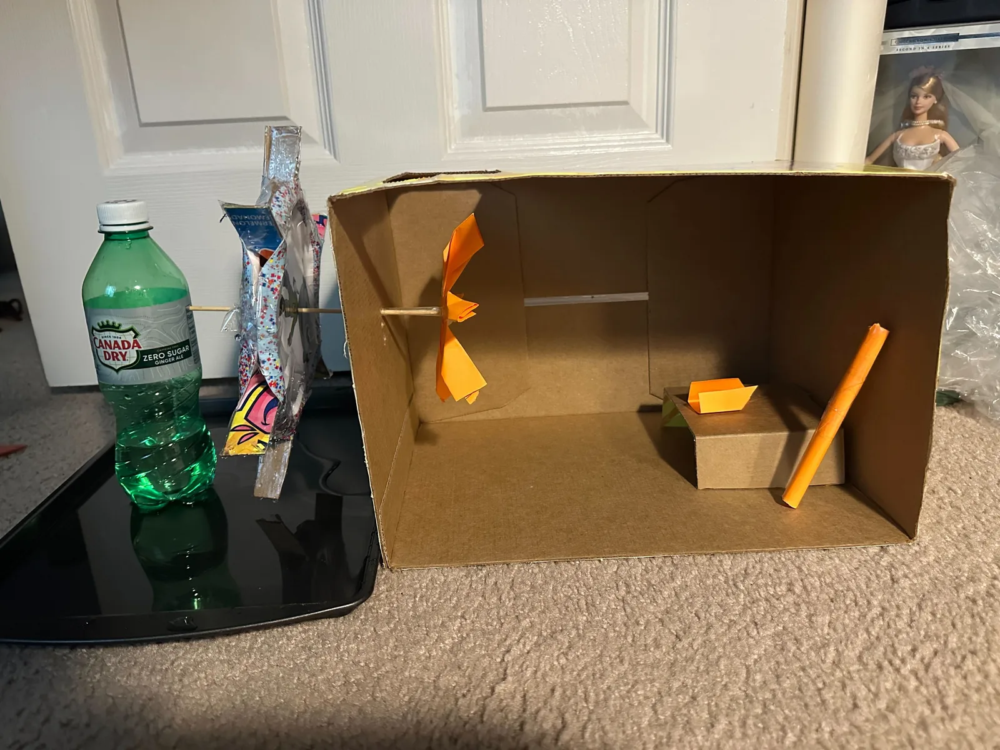
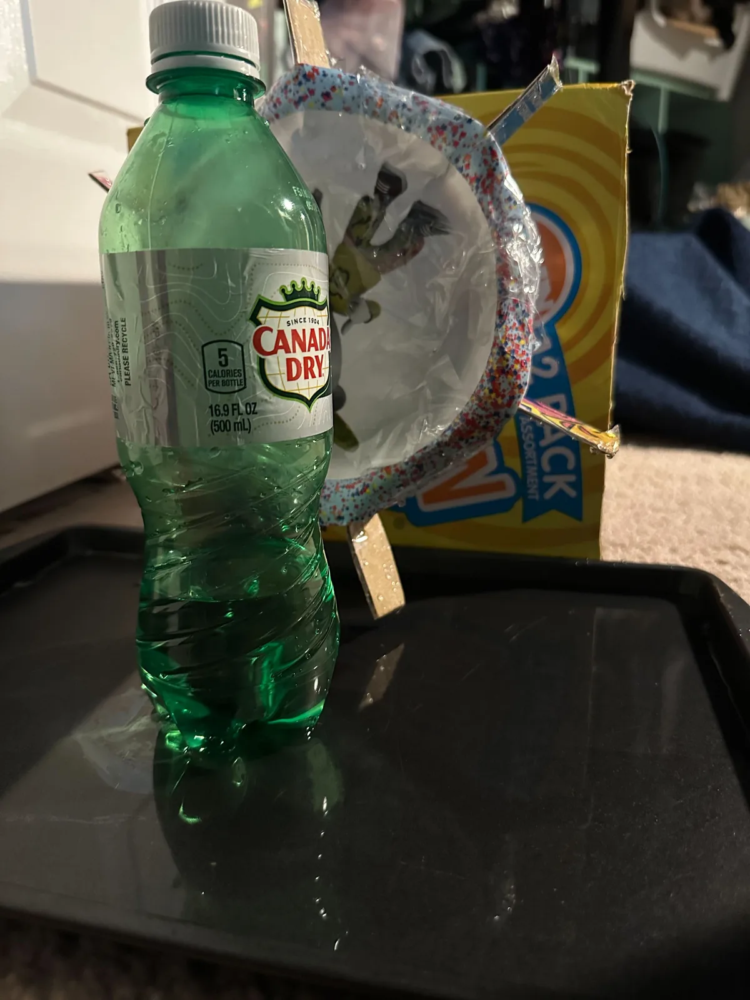
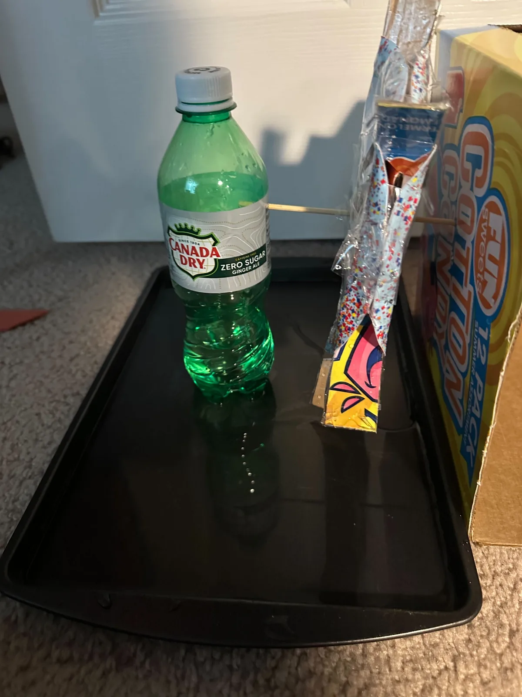
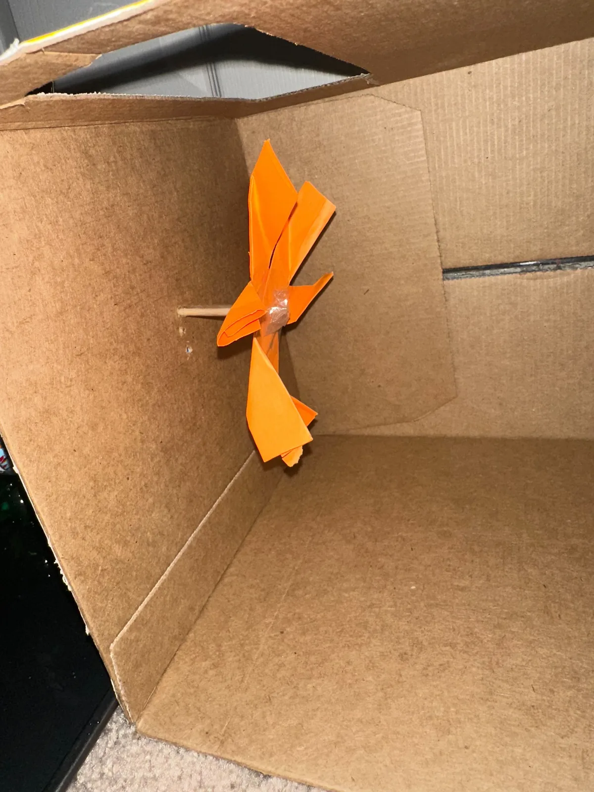
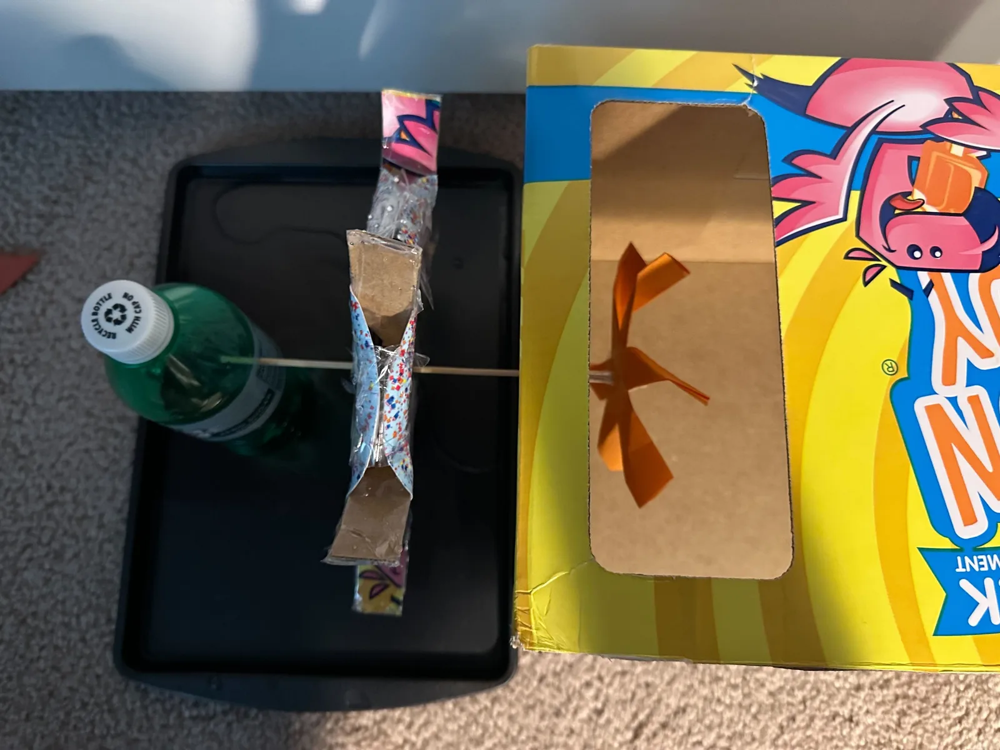

INNOVATION COMPETITION / 2025–2026
By Erin Marquez

We are proud to announce that Erin Marquez has been awarded the Pioneering Sustainable Infrastructure for Climate-Resilient Education Award for her innovative project that harnesses renewable energy to provide healthy, well-ventilated classrooms in flood-prone and resource-limited regions.
In many parts of the world, schools face challenges in maintaining clean indoor air due to unreliable electricity, high energy costs, or dependence on fossil fuels. Erin’s project, Sustainable Building in Flood-Ridden Areas, introduces a creative solution: a water-wheel-powered ventilation system that operates entirely off-grid. By using the natural flow of water to drive mechanical ventilation, her design eliminates greenhouse gas emissions from traditional HVAC systems while reducing operating expenses for schools.
This innovation not only improves the health and learning environment for students but also serves as a hands-on educational tool. Students and communities alike can witness renewable energy in action, fostering environmental awareness and practical STEM learning. The design is simple to maintain, scalable, and adaptable for diverse geographies, making it especially valuable for communities facing both climate risks and infrastructure gaps.
The award recognizes Erin’s remarkable ability to merge historical engineering principles with modern sustainability goals, creating a solution that is functional, equitable, and environmentally responsible. Her work stands as a model for how resilient, community-focused infrastructure can be both visionary and practical.
Visitors will find two prominent buttons below that link to Erin’s full Research Paper and her detailed Presentation, offering a closer look at the research, design process, and projected impact of this pioneering project.
We congratulate Erin Marquez on this outstanding achievement and commend her dedication to creating innovative, sustainable solutions for a changing climate.



